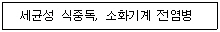
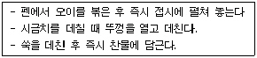
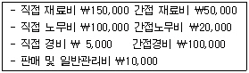

한식조리기능사 (2006-07-16 기출문제)
1과목: 식품위생 및 법규
1. 식품위생 법규상 허위표시 과대광고 범위에 속하지 않는 것은?
- 질병의 치료에 효능이 있다는 내용의 표시, 광고
- 제품의 성분과 다른 내용의 표시, 광고
- 공인된 제조방법에 대한 내용
- 외국어의 사용 등으로 외국제품으로 혼동할 우려가 있는 표시, 광고
(정답률: 75%)

2. 식품위생법상 식품위생의 대상이 되지 않는 것은?
- 식품 및 식품첨가물
- 의약품
- 식품, 용기 및 포장
- 식품, 기구
(정답률: 95%)
3. 위생관리상태 등이 우수한 식품접객업소를 선정하여 모범업소로 지정할 수 있는 자는?
- 보건복지부장관
- 식품의약품안전청
- 시,도지사
- 시장,군수.구청장
(정답률: 61%)
4. 조리사 또는 영양사 면허의 취소처분을 받고 그 취소된 날로부터 얼마가 경과되어야 면허를 받을 자격이 있는가?
- 1개월
- 3개월
- 6개월
- 1년
(정답률: 88%)
5. 우리나라 식품위생 행정을 담당하고 있는 기관은?
- 환경부
- 노동부
- 보건복지부
- 행정자치부
(정답률: 89%)
6. 세균성식중독을 예방하는 방법과 가장 거리가 먼 것은?
- 조리장의 청결유지
- 조리기구의 소독
- 유독한부위의 제거
- 신선한 재료의 사용
(정답률: 82%)
7. 일반적으로 미생물이 관계하여 일어나는 현상은?
- 유지의 자동산화 (autoxidation)
- 생선의 부패 (puterifaction)
- 과일의 호흡작용(후숙)
- 육류의 강직해제
(정답률: 76%)
8. 세균성 식중독이 병원성 소화기계전염병과 다른 점을 나열한 사항 중 잘못된 것은?

- 식품: 원인물질 축적제 식품: 병원균운반체
- 2차감염이 빈번함 2차감염이 없음
- 식품위생법으로 관리 전염병 예방방법으로 관리
- 비교적 짧은 잠복기 비교적 긴 잠복기
(정답률: 69%)
9. 식품위생행정의 목적과 가장 거리가 먼 것은?
- 식품위생상의 위해방지
- 식품영양의 질적 향상도모
- 식품의 안전성확보
- 식품의 판매촉진
(정답률: 88%)
10. 다음 식품첨가물중 유지의 산화방지제는?
- 소르빈산 칼륨
- 차아염소산 나트륨
- 몰식자산 프로필
- 아질산나트륨
(정답률: 25%)
11. 다음중 독소형 식중독인 것은?
- 살모넬라 식중독
- 포도상구균 식중독
- 장염비브리오 식중독
- 병원성대장균 식중독
(정답률: 80%)
12. 화학적 식중독에 대한 설명으로 틀린 것은?
- 체내흡수가 빠르다.
- 중독량에 달하면 급성증상이 나타난다.
- 체내분포가 느려 사망률이 낮다.
- 소량의 원인물질 흡수로도 만성중독이 일어난다.
(정답률: 74%)
13. 식품과 해당 독성분의 연결이 잘못된 것은?
- 복어-테트로도톡신(tetrodotoxine)
- 목화씨-고시폴(gossypol)
- 감자- 솔라닌(solanine)
- 독버섯- 베네루핀(venerupin)
(정답률: 90%)
14. 식용유 제조시 사용되는 식품첨가물 중 n-hexane(핵산)의 용도는?
- 추출제
- 유화제
- 향신료
- 보존료
(정답률: 37%)
15. 화학물질에 의한 식중독의 증상 중 틀린것 은?
- 유기인제농약-신경독
- 메탄올-시각장애및 실명
- 둘신(dulcine)-혈액독
- 붕산-체중과다
(정답률: 69%)
2과목: 식품학
16. 냉동시켰던 쇠고기를 해동하니 드립(drip)이 많이 발생했다. 다음 중 가장 관계 깊은 것은?
- 단백질의 변성
- 탄수화물의 호화
- 지방의 산패
- 무기질의 분해
(정답률: 75%)
17. 오이의 녹색 꼭지부분에 함유된 쓴맛 성분은?
- 이포메아마론(ipomeamarone)
- 카페인(caffeine)
- 테오브로민(theobromine)
- 큐커바이타신(cucurbitacin)
(정답률: 55%)
18. 영양 결핍증상과 원인이 되는 영양소의 연결이 잘못된 것은?
- 빈혈 -엽산
- 구순구각염-비타민 B12
- 야맹증 -비타민 A
- 괴혈병-비타민C
(정답률: 57%)
19. 4월에서 5월 상순에 날카로운 가시가 있는 나뭇가지로부터 따낸 어린 순으로 다른 종류에는 독활이라 불리 우는 것이 있으며 쓴맛과 떫은맛을 제거한 후 회나 전으로 이용하는 식품은?
- 죽순
- 아스파라거스
- 샐러리
- 두릅
(정답률: 77%)
20. 변형된 단백질 분자가 집합하여 질서정연한 망상구조를 형성하는 단백질의 중요한 기능성과 관계가 가장 먼 식품은?
- 두부
- 어묵
- 빵 반죽
- 북어
(정답률: 74%)
21. 안토시아닌색소의 특징을 가장 올바르게 설명한 것은?
- 당류에 의해 퇴색이 촉진 된다.
- 연속된 이소푸렌(isoprene) 구조에 의해 색을 낸다.
- 황색과 오랜지색을 많이 낸다.
- 알칼리에서 플라빌리움(flavylium) 이온을 형성한다.
(정답률: 28%)
22. 식품의 냄새성분과 소재식품의 연결이 잘못된 것은?
- 미르신(myrcene) - 미나리
- 멘톨(menthol) - 박하
- 푸르푸릴알콜(furfuryl alcohol) - 커피
- 메틸메르캡탄(methyl mercaptan) - 후추
(정답률: 40%)
23. 밀가루를 물로 반죽하여 면을 만들 때 반죽의 점성에 관계하는 주성분은?
- 글로불린(globulin)
- 글루텐(gluten)
- 덱스트린(dextrin)
- 아밀로펙틴(amylopectin)
(정답률: 85%)
24. 불건성유에 속하는 것은?
- 참기름
- 땅콩기름
- 콩기름
- 옥수수기름
(정답률: 60%)
25. 과일의 숙성에 대한 설명으로 잘못된 것은?
- 과일류의 호흡에 따른 변화를 되도록 촉진시켜 빠른 시간 내에 과일을 숙성시키는 방법으로 가스저장법 (CA)이 이용된다.
- 과일류 중 일부는 수확 후에 호흡작용이 특이하게 상승 되는 현상을 보인다.
- 호흡상승작용을 보이는 과일류는 적당한 방법으로 호흡을 조절하여 저장기간을 조절하면서 후숙 시킬 수 있다.
- 호흡상승현상을 보이지 않는 과일류는 수확하여 저장 하여도 품질이 향상되지 않으므로 적당한 시기에 수확하여 곧 식용 또는 가공하여야 한다.
(정답률: 45%)
26. 훈연(smoking)시 발생하는 연기성분을 나열한 것 중 틀린 것은?
- 페놀(phenol)
- 포름알데히드(formaldehyde)
- 개미산(formic acid)
- 사포닌(saponin)
(정답률: 57%)
27. 전분의 노화에 영향을 미치는 인자의 설명 중 틀린 것은?
- 노화가 가장 잘 일어나는 온도는 0~5℃이다
- 수분함량 10% 이하인 경우 노화가 잘 일어나지 않는다.
- 다량의 수소이온은 노화를 저지한다.
- 아밀로오스 함량이 많은 전분일수록 노화가 빨리 일어난다.
(정답률: 32%)
28. 무화과에서 얻는 육류의 연화효소는?
- 피신
- 브로멜린
- 파파인
- 레닌
(정답률: 39%)
29. 과실의 젤리화 3요소와 관계없는 것은?
- 젤라틴
- 당
- 펙틴
- 산
(정답률: 57%)
30. 지방의 성질 중 틀린 것은?
- 불포화지방산을 많이 함유하고 있는 지방은 요오드값 이 높다
- 검화란 지방이 산에 의해 분해되는 것이다
- 일반적으로 어류의 지방은 불포화지방산의 함량이 커 서 상온에서 액체 상태로 존재 한다.
- 복합지질은 친수기와 친유기가 있어 지방을 유화시키려는 성질이 있다
(정답률: 37%)
3과목: 조리이론과 원가계산
31. 식품과 유지의 특성이 잘못 짝지어진 것은?
- 버터크림 -크림성
- 쿠키- 점성
- 마요네즈-유화성
- 튀김 -열매체
(정답률: 68%)
32. 해리된 수소이온이 내는 맛과 가장 관계 깊은 것은?
- 신맛
- 단맛
- 매운맛
- 짠맛
(정답률: 60%)
33. 밥 짓기에 대한 설명으로 가장 잘못된 것은?
- 쌀을 미리 물에 불리는 것은 가열시 열전도를 좋게 하여주기 위함이다
- 밥물은 쌀 중량의 2.5배 부피의 1.5배 정도 되도록 붓는다.
- 쌀전분이 완전히 알파화 되려면 98도씨 이상에서 20분 정도 걸린다
- 밥맛을 좋게 하기 위하여 0.03% 정도의 소금을 넣을 수 있다.
(정답률: 57%)
34. 다음 보기의 조리과정은 공통적으로 어떠한 목적을 달성하기 위하여 수행하는 것인가?

- 비타민 A 의 손실을 최소화하기 위함이다
- 비타민 C 의 손실을 최소화하기 위함이다
- 클로로필의 변색을 최소화하기 위함이다
- 안토시아닌의 변색을 최소화하기 위함이다
(정답률: 55%)
35. 다음 자료에 의해서 총원가를 산출하면 얼마인가?

- 435,000
- 365,000
- 265,000
- 180,000
(정답률: 58%)
36. 인덕션 (induction) 조리기기에 대한 내용으로 틀린 것은?
- 조리기기 상부의 표면은 매끈한 세라믹물질로 만들어 져 있다.
- 자기전류가 유도코일에 의하여 발생되어 상부에 놓인 조리기구와 자기마찰에 의한 가열이 되어 지는 것이다.
- 상부에 놓이는 조리 기구는 금속성 철을 함유한 것이어야 한다.
- 가열속도가 빠른 반면 열의 세기를 조절할 수 없는 단 점이 있다.
(정답률: 68%)
37. 섣달 그믐날의 절식은?
- 육개장
- 편수
- 무시루떡
- 골동반(비빔밥)
(정답률: 50%)
38. 우유를 가열할 때 용기 바닥이나 옆에 눌어붙은 것은 주로 어떤 성분인가?
- 카제인(casein)
- 유청(whey)단백질
- 레시틴(lecithin)
- 유당(lactose)
(정답률: 41%)
39. 단체급식에서 식품을 구매하고자 할 때 식품단가는 최소한 어느 정도 점검해야 하는가?
- 1개월에 2회
- 2개월에 1회
- 3개월에 1회
- 4개월에 2회
(정답률: 70%)
40. 분리된 마요네즈를 재생시키는 방법으로 가장 적합한 것은?
- 새로운 난황에 분리된 것을 조금씩 넣으며 한 방향으로 저어준다.
- 기름을 더 넣어 한 방향으로 빠르게 저어준다
- 레몬즙을 놓은 후 기름과 식초를 넣어 저어준다
- 분리된 마요네즈를 양쪽 방향으로 빠르게 저어준다
(정답률: 74%)
41. 단체급식소의 식단(메뉴)으로 특정다수가 지속적으로 한곳의 급식장소에서 제공하기에 적합하지 않는 식단은?
- 고정메뉴(fixed menu)
- 순환메뉴(cycle menu)
- 변동메뉴(changing menu)
- 선택식 메뉴(selsctive menu)
(정답률: 53%)
42. 커피를 끓이는 방법에 대한 설명 중 가장 옳은 것은?
- .알칼리도가 높은 물로 끓이면 커피중의 산이 중화되어 커피의 맛이 감퇴된다.
- 탄닌은 쓴맛을 주는 성분으로 커피를 끓여도 유출되지 않는다.
- 원두커피는 냉수에 넣고 오래 끓이면 모든 성분이 잘 우러나와 맛과 향이 증진 된다
- 굵게 분쇄된 원두커피는 여과법으로 준비하는 경우 맛과 향이 최대한 우러나온다.
(정답률: 42%)
43. 조미료의 침투속도를 고려한 사용 순서로 옳은 것은?(오류 신고가 접수된 문제입니다. 반드시 정답과 해설을 확인하시기 바랍니다.)
- 소금→설탕→식초
- 설탕→소금→식초
- 소금→식초→설탕
- 설탕→식초→소금
(정답률: 77%)
44. 조리작업장의 위치선정 조건으로 가장 거리가 먼 것은?
- 보온을 위해 지하인 곳
- 통풍이 잘되고 밝고 청결한 곳
- 음식의 운반과 배선이 편리한 곳
- 재료의 반입과 오물의 반출이 쉬운 곳
(정답률: 89%)
45. 어류의 부패속도에 대하여 가장 올바르게 설명한 것은?
- 해수어가 담수어보다 쉽게 부패한다.
- 얼음물에 보관하는 것보다 냉장고에 보관하는 것이 더 쉽게 부패한다.
- 토막을 친 것이 통째로 보관하는 것보다 쉽게 부패한다.
- 어류는 비늘이 있어서 미생물의 침투가 육류에 비해 늦다
(정답률: 52%)
46. 칼슘(Ca)의 기능이 아닌 것은?
- 골격 치아의 구성
- 혈액의 응고작용
- 헤모글로빈의 생성
- 신경의 전달
(정답률: 43%)
47. 재료 소비량을 결정하는 방법이 아닌 것은?
- 계속 기록법
- 재고 조사법
- 선입선출법
- 역계산법
(정답률: 66%)
48. 국수를 삶는 방법으로 가장 부적당한 것은?
- 끓는 물에 넣는 국수의 양이 많아서는 안 된다.
- 국수 무게의 6~7배 무게의 물에서 삶는다.
- 국수를 넣은 후 물이 다시 끓기 시작하면 찬물을 넣는다.
- 국수가 다 익으면 많은 양의 냉수에서 천천히 식힌다.
(정답률: 65%)
49. 다음 각 영양소와 그 소화효소의 연결이 옳은 것은?
- 무기질 - 트립신(trypsin)
- 지방 - 아밀라아제(amylase)
- 단백질 - 리파아제(lipase)
- 당질 - 프티알린(ptyalin)
(정답률: 28%)
50. 냉동저장 채소로 가장 적합하지 않는 것은?
- 완두콩
- 브로컬리
- 컬리플라워
- 샐러리
(정답률: 56%)
4과목: 공중보건
51. 경구전염병으로 주로 신경계에 증상을 일으키는 것은?
- 폴리오
- 장티푸스
- 콜레라
- 세균성 이질
(정답률: 56%)
52. 불쾌지수 측정에 필요한 요소는?
- 건구온도, 습구온도
- 기온, 풍속
- 기습, 풍속
- 기습, 기동
(정답률: 71%)
53. 감각온도의 3요소에 속하지 않는 것은?
- 기온
- 기습
- 기류
- 기압
(정답률: 83%)
54. 윈슬로(Winslow)의 공중보건학에 대한 정의를 설명한 내용 중 틀린 것은?
- 모든 인류의 질병치료
- 지역사회주민의 질병예방
- 모든 인간의 수명 연장
- 지역사회 주민의 육체적 정신적 효율의 증진
(정답률: 55%)
55. 일반적으로 개달물(介達物) 전파가 가장 잘되는 것은?
- 공수병
- 일본뇌염
- 트라코마
- 황열
(정답률: 35%)
56. 바이러스와 포자형성균을 소독하는데 가장 좋은 소독법은?
- 일광소독
- 알콜소독
- 건열소독
- 고압증기멸균
(정답률: 71%)
57. 채소를 통하여 매개되는 기생충과 가장 거리가 먼 것은 ?
- 편충
- .십이지장충
- 동양모양선충
- 선모충
(정답률: 55%)
58. 진개처리법과 가장 거리가 먼 것은?
- 위생적 매립법
- 소각법
- 비료화법
- 활성슬러지법
(정답률: 67%)
59. 곤충을 매개로 간접 전파되는 전염병과 가장 거리가 먼 것은?
- 재귀열
- 말라리아
- 인플루엔자
- 쯔쯔가무시증
(정답률: 71%)
60. 호흡기 전염병에 속하지 않은 것은?
- 홍역
- 일본 뇌염
- 디프테리아
- .백일해
(정답률: 72%)